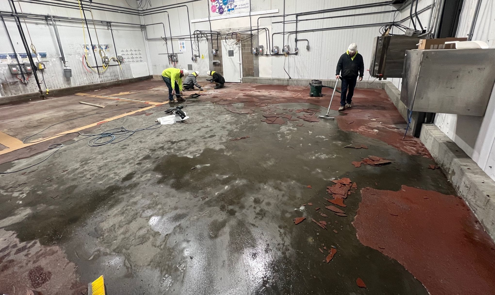
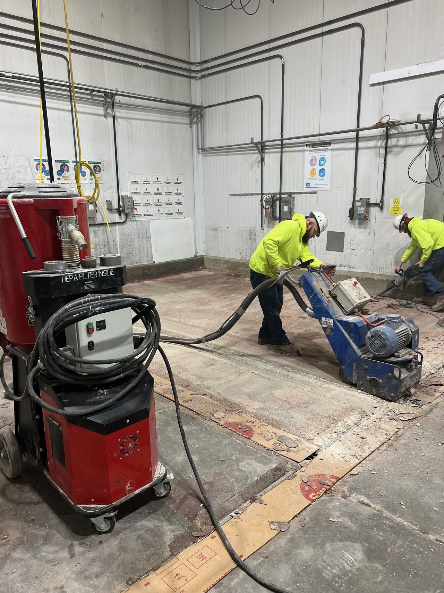
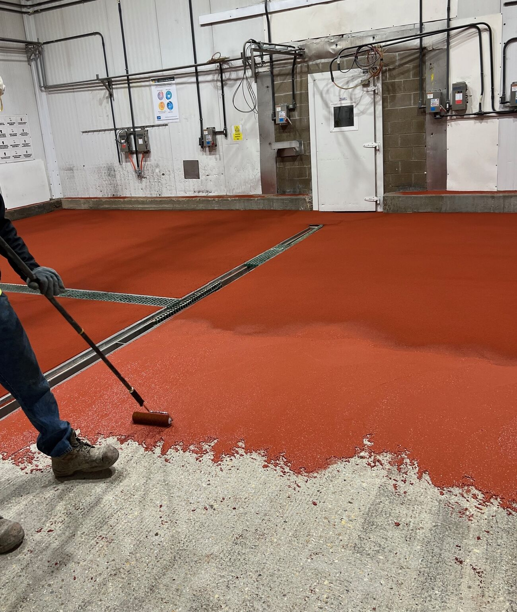
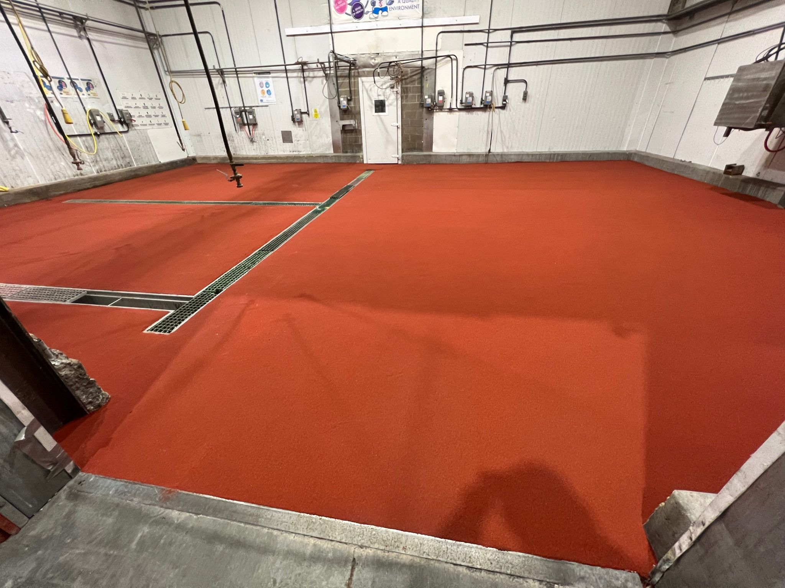

This beef processing facility had a floor that was failing. The existing red epoxy coating was delaminating in large sheets, exposing bare concrete underneath. In a USDA-inspected meat plant, that's not just an eyesore — it's a shutdown risk. They called us to fix it right.
Step 1: Remove the Failed Coating
The old epoxy was peeling up in sheets — a classic sign of poor adhesion caused by inadequate surface preparation during the original install. Our crew got to work removing every trace of the failed coating and cleaning up the mess left behind.
Step 2: Scarify the Substrate
With the old coating removed, we scarified the entire 1,621 square feet down to clean, profiled concrete. Our scarifiers are connected to HEPA-filtered vacuums — critical in a food processing environment where airborne dust is a contamination risk.
Step 3: Correct the Slope

The existing floor had slope issues that were causing water to pool instead of draining properly. We used SaniCrete PC polymer concrete to fill low spots and correct the pitch, ensuring water moves to the drains after every washdown.
Step 4: Install SaniCrete SL
SaniCrete SL — our 3/8" self-leveling cementitious urethane — went down across the entire area. This system is built for meat processing: it handles thermal shock from hot washdowns, resists the aggressive chemicals used in sanitation, and provides the seamless, non-porous surface that USDA requires.
Step 5: Colored Quartz Broadcast
For maximum slip resistance, we broadcast large-sized colored quartz aggregate into the wet SL. This gives the floor an aggressive, non-slip texture that keeps workers on their feet in the wet, greasy conditions of a beef kill floor. The red quartz also provides high visibility and easy identification of the processing area.
The Finished Floor
1,621 square feet of seamless, USDA-compliant flooring with integrated trench drains and proper slope to every drain point. No more delamination. No more pooling water. No more failed inspections. Just a floor built to handle the demands of beef processing — day after day, year after year.
Project Details
- Facility: Beef Processing Plant
- Area: 1,621 SF
- System: SaniCrete SL 3/8" with colored quartz broadcast
- Slope Correction: SaniCrete PC polymer concrete
- Prep: Full scarification and jackhammering